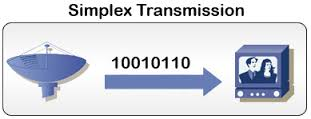

También denominado unidireccional,es una transmición única,de una sola dirección.Un ejemplo de transmición simplex es la señal que se envia de una estación de TV a la TV de su casa.

volver á páxina principal